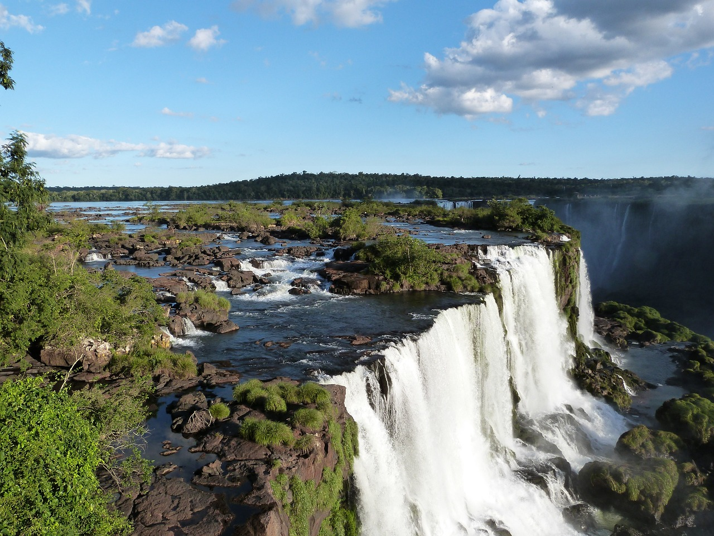
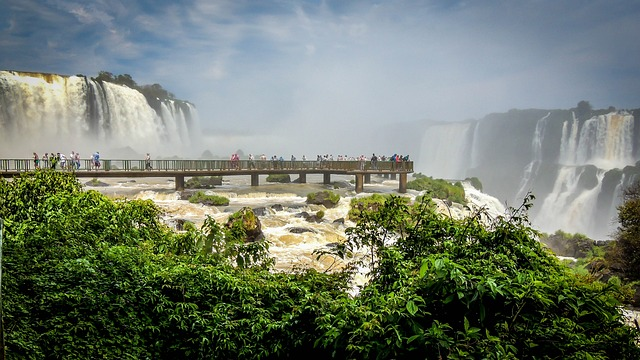
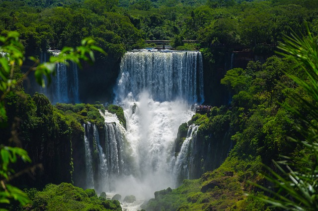

Vídeo sobre as Cataratas do Iguaçu

Desafios
Os desafios das Cataratas do Iguaçu incluem a preservação do ecossistema único que as rodeia, como um Patrimônio Mundial da UNESCO, é crucial equilibrar o turismo com a conservação da biodiversidade, garantindo que as atividades humanas não causem danos irreversíveis ao ambiente natural. O grande fluxo de turistas que visitam as Cataratas do Iguaçu apresenta desafios em termos de gestão sustentável do turismo, é necessário implementar políticas e práticas que minimizem os impactos negativos, como a erosão do solo, a poluição e a perturbação dos habitats locais, ao mesmo tempo em que se promove uma experiência turística enriquecedora e segura.
Contribuições
Além de seu valor estético e turístico, as Cataratas do Iguaçu desempenham um papel crucial na conservação da biodiversidade, a região abriga uma grande variedade de espécies vegetais e animais, muitas das quais são endêmicas e ameaçadas de extinção, ao proteger esse ambiente único, as Cataratas do Iguaçu contribuem para a manutenção dos processos ecológicos essenciais e para a preservação da diversidade biológica. Além disso, as Cataratas do Iguaçu têm um impacto positivo no desenvolvimento socioeconômico das regiões circunvizinhas, proporcionando oportunidades de emprego, investimento em infraestrutura e promoção da cultura local. Através do turismo responsável e da cooperação entre os diferentes atores, as Cataratas do Iguaçu demonstram como é possível conciliar o desenvolvimento humano com a conservação ambiental, oferecendo benefícios tanto para as comunidades locais quanto para o meio ambiente.
Sete maravilhas naturais do mundo
As Cataratas do Iguaçu são uma das sete maravilhas naturais do mundo, uma distinção que reflete sua imponência, beleza e importância ambiental. Localizadas na fronteira entre o Brasil e a Argentina, as Cataratas do Iguaçu são formadas pelo rio Iguaçu, que se divide em mais de 270 quedas d'água ao longo de uma extensão de aproximadamente 2,7 quilômetros. A grandiosidade das Cataratas do Iguaçu é verdadeiramente impressionante, com suas quedas d'água atingindo alturas que variam de 60 a 82 metros. O espetáculo natural é acompanhado pelo rugido das águas, pela névoa que se eleva dos precipícios e pela exuberante vegetação que envolve toda a região.Relógio Agrinho
Tempo restante para a cerimônia de premiação do Agrinho
7
dias
7
horas
7
min
7
seg